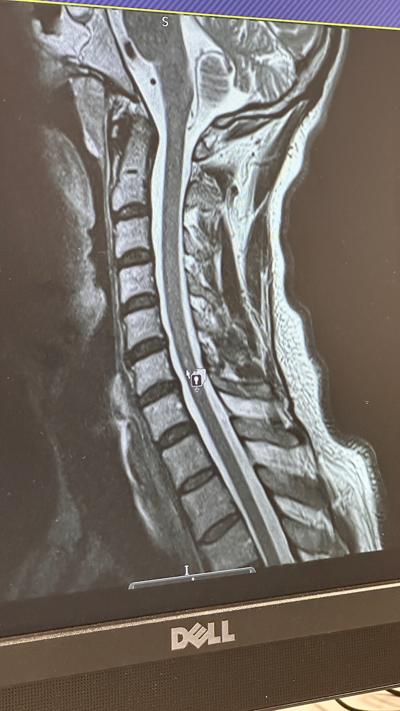

Comprehensive Neurological Report – James Saint
Date: July 2025
Prepared for: GP and Neurology Team
Findings from MRI Imaging
1. Cervical Spinal Cord Lesion (C5/6)
The following image demonstrates a hyperintense signal within the cervical spinal cord at the C5/6 level. This is consistent with inflammation or previous myelitis, as interpreted by the consulting neurologist in the July 2025 letter.
2. Right Cerebellar Lesion
This axial T2-weighted MRI brain scan shows a signal abnormality in the right cerebellar hemisphere. The radiological impression and clinical correlation suggest a subacute infarct (stroke), which may explain coordination disturbances and left-sided sensory effects.

Integrated Clinical Summary
- Symptoms: Ongoing left-sided nerve pain, paresthesia, muscle tightness, visual and auditory sensitivity, and worsening gait and balance.
- Brain: Right cerebellar infarct identified on MRI (July 2025)
- Spine: C5/6 hyperintensity suggestive of prior myelitis (May 2025 consultant letter)
- Additional Neurological Signs: Pale optic disc, asymmetrical pupils, vibration loss at left ASIS, occipital neuropathy with regional alopecia
- Systemic Context: Symptoms initiated following AstraZeneca COVID-19 vaccine (2021) and have progressively worsened over 4 years
Investigations and Referrals
- Pending lumbar puncture (CSF analysis)
- Carotid and vertebral CT angiogram
- Bubble echocardiogram (to check for paradoxical embolism)
- Evoked potentials and full autoimmune panel (MOG, AQP4, ANA, ENA)
Clinical Impression
The patient presents with dual-site central nervous system lesions consistent with both vascular (cerebellar infarct) and inflammatory (cervical spinal cord) origins. This is consistent with post-vaccine neuroinflammatory syndrome and requires urgent multi-specialist involvement (neurology, immunology, neurovascular).